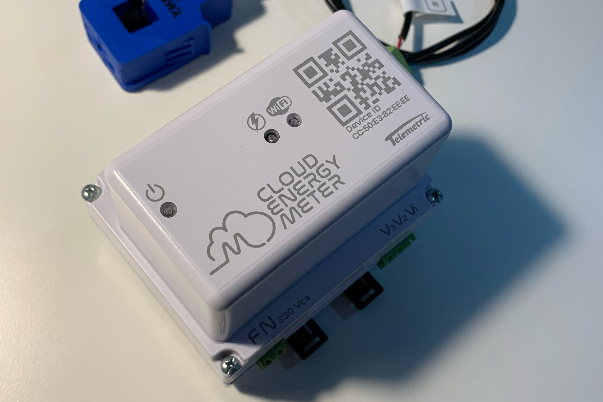
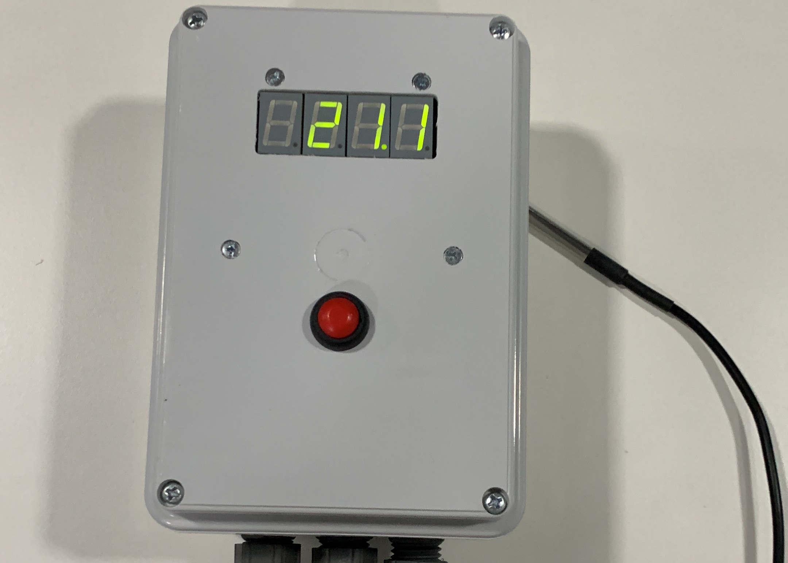
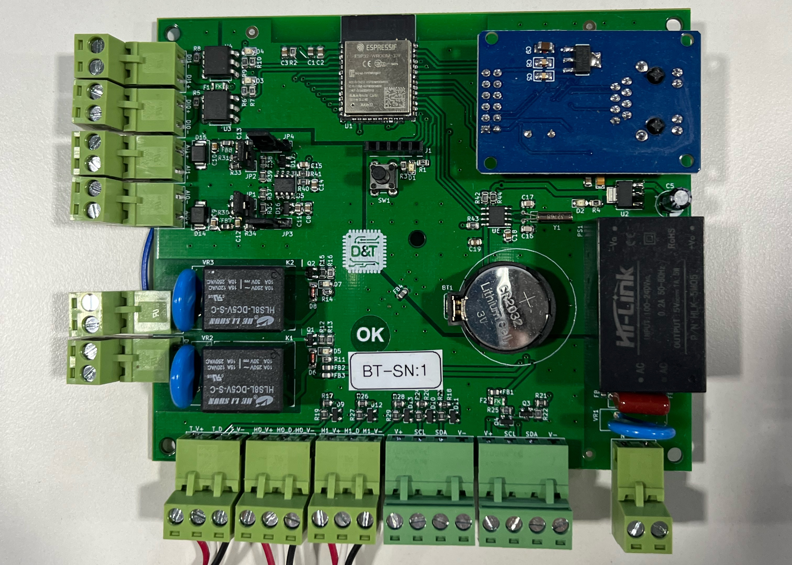

Cloud Energy Meter
Analizador inteligente de calidad de energía eléctrica trifásica, sus principales caracterísiticas son:
- Conección inalámbrica Wi-Fi y Bluetooth
- Plataforma web de monitoreo y configiración remota
- Valores en tiempo real e históricos
- Reporte de eventos y alarmas mediante notificaciones al celular
- Medición de potencia instantáne y media
- Análisis armónico de la red, en tiempo real e históricos
- Alarmas configurables por tensión, corriente, potencia activa y factor de potencia

T-700
T-700 es un controlador inteligente de temperatura, que le permitirá gesitonar de manera remotea su instalación frigorífica. Sus principales caracterísiticas son:
- Se conecta a internet mediante conectividad inalámbrica Wi-Fi
- A través del la plicación asociada (D&T Cloud) usted podrá monitorear en tiempo real y ver datos históricos de la instalación.
- Permite la modificación remota del set-point o punto de funcionamiento de la cámara o instalción frigorífica
- Integra en un mismo equipo un termómetro wifi y un termostato industrial

Gateway IoT
Este dispositivo, le permitira inregrar su industria al mundo del IoT industrial. Sus principales caracterísiticas son:
- Conección inalámbrica y cableada medainte Ethernet
- App móvil para visualizar valores en tiempo real, históricos y eventos
- Servidor web embebido para configuración
- Facilmente integrable a un sistema escada industrial mediante ModBus TCP
- 2 Salidas relé 10 A - 220 Vca
- 2 Entradas digitales optoacopladas
- 2 Entradas analígicas configurables 4-20 mA ó 0-12 V